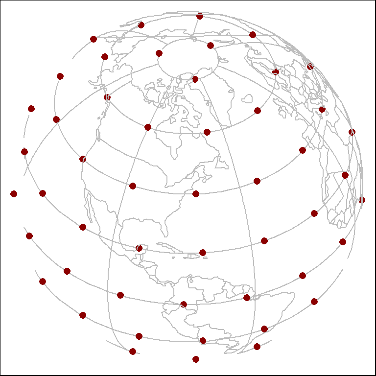
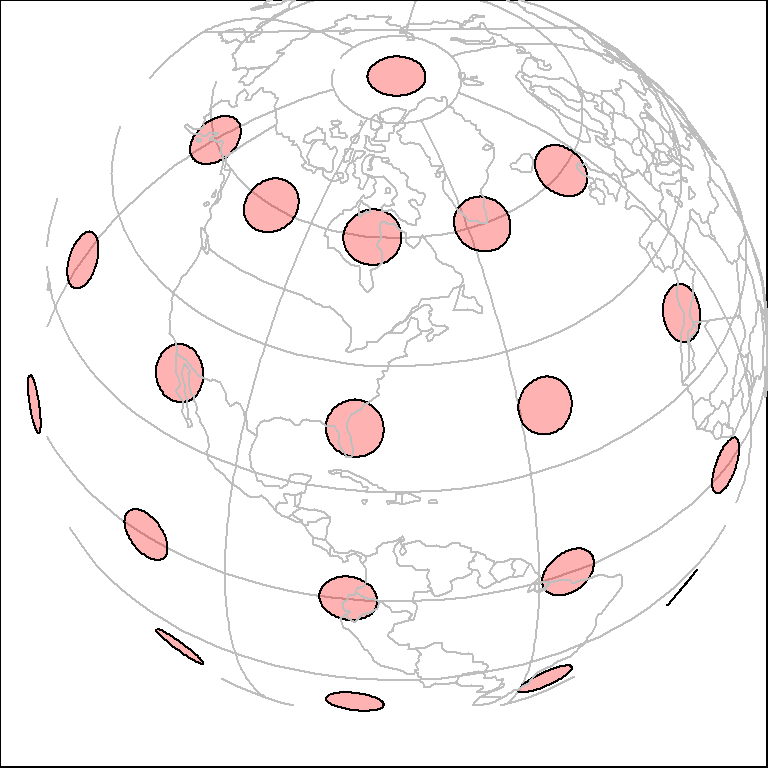
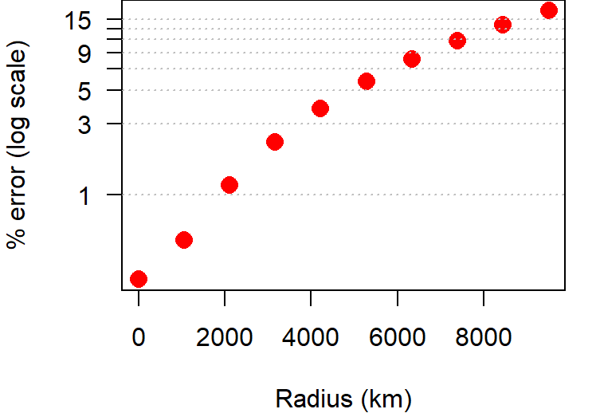
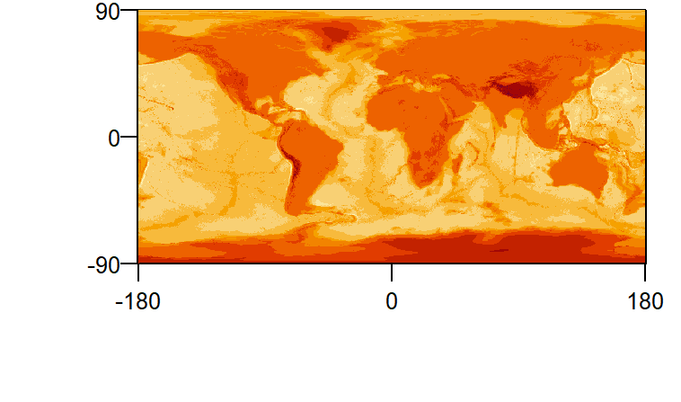
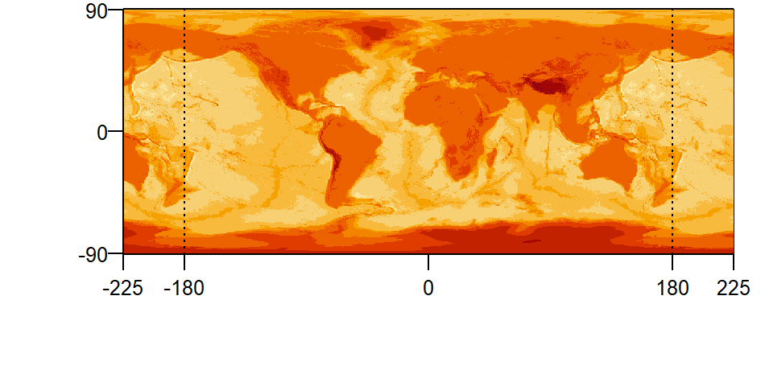

Miscellaneous functions
Geospatial functions
Generate a uniform grid of points
source("https://raw.githubusercontent.com/mgimond/miscR/master/geo_grid_unif.R")The geo_grid_unif() function will generate a grid of points on a sphere. By default, the output is a matrix of longitude and latitude values. If an sf object is desired, the output will be a point sf object in a WGS84 coordinate system.
Arguments:
n: Number of pointssf: Logical indicating if ansfobject should be created (default output is a matrix)
Example:
Code
library(sf)
source("https://raw.githubusercontent.com/mgimond/miscR/master/geo_grid_unif.R")
# Generate uniform points
p <- geo_grid_unif(n =100, sf = TRUE)
# Download world layer for reference
world <- readRDS(gzcon(url("https://github.com/mgimond/tissot/raw/master/smpl_world.rds")))
# Reproject to "world from space" (this CRS makes it easier to view
# the uniform distribution of points on a sphere)
world_sp <- st_transform(world, crs = "ESRI:102038")
p_sp <- st_transform(p, crs = "ESRI:102038")
## Plot the data
plot(p_sp, pch = 16, col = "darkred", graticule = st_graticule(world_sp ))
plot(st_geometry(world_sp), add = TRUE, border = "grey")
Generate point buffers on an azimuthal equidistant CS
source("https://raw.githubusercontent.com/mgimond/miscR/master/geo_buf.R")The geo_buf() function generates geometrically correct buffers from an sf point object stored in a geographic coordinate system. Output consists of an sf polygon object in a WGS84 coordinate system. The buffers are generated in ESRI’s World Azimuthal Equidistant projection centered on each point whose buffer is generated.
Arguments:
p:sfpoint object in a geographic coordinate system (i.e. lon/lat values).seg: Number of line segments for a quarter of the circle (e.g. a seg = 3 will generate a circle with 12 line segments). The default is30.radius: Buffer radius in meters. Default is5000meters.
Example:
Code
library(sf)
source("https://raw.githubusercontent.com/mgimond/miscR/master/geo_buf.R")
# Download world layer for reference
world <- readRDS(gzcon(url("https://github.com/mgimond/tissot/raw/master/smpl_world.rds")))
# Create point layer
p <- data.frame( y = c(rep( seq(-60,60, by = 30), times = 5), 90),
x = c(rep( seq(-150, 0, by = 35), each = 5 ), 0))
p.sf <- st_as_sf(p, coords = c("x","y"), crs = "EPSG:4326")
# Create buffers
buf <- geo_buf(p.sf, radius = 500000)
# Reproject to "world from space" (this CRS makes it easier to view
# the uniform distribution of points on a sphere)
world_sp <- st_transform(world, crs = "ESRI:102038")
buf_sp <- st_transform(buf, crs = "ESRI:102038")
## Plot the data
plot(buf_sp, pch = 16, col = rgb(1,0,0,0.3),
graticule = st_graticule(world_sp ))
plot(st_geometry(world_sp), add = TRUE, border = "grey")
Note that the function does not generate a true geodesic buffer. It generates one from an equidistant projection (World Azimuthal Equidistant) centered on each point in the input dataset. As such, error increases with increasing buffer radius.
Code
buf_area <- function(pt, x) {
(geo_buf(pt, radius = x) |> st_area() ) / (x^2 * pi) * 100
}
rad <- seq(1,9500000, length.out = 10)
pt <- st_point(c(-70,45)) |> st_sfc(crs = "EPSG:4326") |> st_as_sf()
err <- 100 - sapply(rad, FUN = \(x) buf_area(pt, x) )
plot(rad / 1000, abs(err), xlab = "Radius (km)", ylab = "% error (log scale)",
col = "red", pch = 16, cex = 1.5, log = "y", las =1, yaxt="n")
lab <- seq(1,15, by= 2)
axis(2, at = lab, label = lab, las = 1)
abline(h=lab, lty = 3, col = "grey")
Generate geodesic point buffers on a sphere
source("https://raw.githubusercontent.com/mgimond/miscR/master/geo_buf_geodesic.R")The geo_buf_geodesic() function generates geodesic buffers from an sf point object stored in a geographic coordinate system. Output consists of an sf polygon object in a WGS84 coordinate system. The buffers are generated on a sphere.
Arguments:
p:sfpoint object in a geographic coordinate system (i.e. lon/lat values).seg: Number of line segments for a quarter of the circle (e.g. a seg = 3 will generate a circle with 12 line segments). The default is30.radius: Buffer radius in meters. Default is5000meters.sphere.r: Sphere radius in meters (default is6371007.2m).
Example:
Code
library(sf)
source("https://raw.githubusercontent.com/mgimond/miscR/master/geo_buf_geodesic.R")
# Download world layer for reference
world <- readRDS(gzcon(url("https://github.com/mgimond/tissot/raw/master/smpl_world.rds")))
# Create point layer
p <- data.frame( y = c(rep( seq(-60,60, by = 30), times = 5), 90),
x = c(rep( seq(-150, 0, by = 35), each = 5 ), 0))
p.sf <- st_as_sf(p, coords = c("x","y"), crs = "EPSG:4326")
# Create buffers
buf <- geo_buf_geodesic(p.sf, radius = 500000)
# Reproject to "world from space" (this CRS makes it easier to view
# the uniform distribution of points on a sphere)
world_sp <- st_transform(world, crs = "ESRI:102038")
buf_sp <- st_transform(buf, crs = "ESRI:102038")
## Plot the data
plot(buf_sp, pch = 16, col = rgb(1,0,0,0.3),
graticule = st_graticule(world_sp ))
plot(st_geometry(world_sp), add = TRUE, border = "grey")The geo_buf_geodesic() does not improve on areal error measurements over its geo_buf() counterpart at large radial distances, but it does benefit from computational improvements over geo_buf() with a processing time about 20 times faster.
Wrap raster across date line
source("https://raw.githubusercontent.com/mgimond/miscR/master/wrap_rast.R")The wrap_rast() function will extend the raster along its east-west axis by wrapping the raster across the date line (i.e. across the -180/180 meridians). The function makes use of the terra package.
Arguments:
r: SpatRaster object in a geographic coordinate system.east: lower bound of the eastern section of the raster to append to the western side of the raster (in degrees).west: upper bound of the western section of the raster to append to the eastern side of the raster (in degrees).
Example:
Here’s an example of an unwrapped raster (i.e. original raster spanning -180 to 180 degrees along the east-west axis).
Code
library(terra)
source("https://raw.githubusercontent.com/mgimond/miscR/master/wrap_rast.R")
# Load sample data
elev <- terra::unwrap(readRDS(gzcon(url("https://raw.githubusercontent.com/mgimond/miscR/master/elev.rds"))))
# Original image
image(elev, xaxt="n", yaxt ="n")
axis(2, at = c(-90,0,90), cex.axis = 0.8, las = 1)
axis(1, at = c(-180,0,180), cex.axis=0.8, line = 0)
To extend the raster by 45 degrees on both ends, set east to 135 (180 - 45) and west to -135 (-180 + 45).
Code
elev45 <- wrap_rast(elev, east = 135, west = -135)
image(elev45, xaxt="n", yaxt="n")
axis(2, at = c(-90,0,90), cex.axis = 0.8, las = 1)
axis(1, at = c(-225,-180,0,180, 225), cex.axis=0.8, line = 0)
abline(v = c(-180, 180), lty = 3)